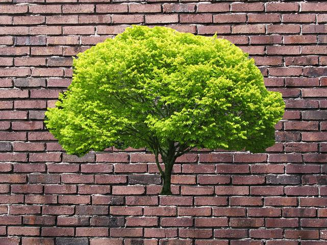

Now you're
thinking with
PCMPISTRI!
SSE instructions for string operations
by David Turner
https://github.com/novalis/thinking-with-pcmpistri
Topological order
foofoo/bar
foo/bar/baz
foo-fleem
foo-fleem/morx
Simple version
/* Put re-ordered character from
* string sa into ca */
if (*sa == '/')
ca = 1;
else if (*sa > 0 && *sa < '/')
ca = *sa + 1;
else
ca = *sa;
Single Instruction
Multiple Data
SIMD
Some 128-bit SIMD registers
four 32-bit integers
eight 16-bit integers

sixteen bytes
movdqa (%rsi), %xmm1
paddusb %xmm1, %xmm0
movdqa %xmm0, (%rdi)
becomes
we already know this tune
movdqa (%rdi), %xmm0paddusb (%rsi), %xmm0
movdqa %xmm0, (%rdi)
Constructing if-then-else
from
AND, XOR, and OR
if (*sa == '/')
ca = 1;
else
ca = *sa;
| IF | THEN | ELSE |
| AND | = | |||
 |
AND | = | ||
| OR | = |  |
xmm6
xmm5
xmm0
xmm7
xmm1 after pcmpeqb
movdqa %xmm1, %xmm2
pand %xmm6, %xmm2
xmm2
xmm1 before pxor
pxor %xmm5, %xmm1
xmm5 after pxor
xmm1
pand %xmm1, %xmm0
xmm0 after pand
xmm2
por %xmm2, %xmm0
xmm0, after por
PCMPISTRI
xmm1
pcmpistri %xmm0, %xmm1
rcx register gets 7
carry flag and zero flag get set
pshufb
Thank you
{kind=link}
Brick wall image by Håkan Svensson (Xauxa), CC-BY-SA
{kind=link}
Bonus slide
Extracting a byte
add $1, %rcx
movq %rcx, %xmm4
paddb %xmm5, %xmm4
pshufb %xmm4, %xmm0
movq %xmm0, %rax